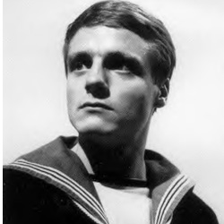

| HOME | The Doctors | The Companions | The Villians |
|
|||
|
Ben JacksonBen first appears in the First Doctor serial The War Machines, when he meets Polly and Dodo in a London nightclub called the Inferno. As an Able Seaman serving in the Royal Navy, aboard HMS Teazer, Ben is feeling depressed and angry because he has a six-month shore posting while his ship is deployed to the West Indies, but Polly and Dodo try to cheer him up. When Polly is accosted by another patron in the Inferno, Ben comes to her rescue. Eventually, Ben and Polly aid the Doctor in his fight against the rogue artificial intelligence known as WOTAN. Afterward, Ben and Polly are the bearers of the news of Dodo's decision to stay in 1966 to the Doctor, and accidentally get carried away in the TARDIS when they try to return Dodo's key to the time machine. Ben is a salt of the Earth kind of fellow, dependable, faithful, but prone to be suspicious when kept in the dark or not understanding what was going on. He is very attached to Polly, considering her posh, giving her the nickname of "Duchess" and appointing himself as both her protector and that of the Doctor. He is present with Polly when the First Doctor regenerates into the Second, and continues to travel with the Second Doctor. Along his travels with Polly and the new Doctor, he encounteredDaleks, Cybermen, Macra, mad scientists and as well as meeting new companion, Jamie McCrimmon. Eventually, the TARDIS finds its way back to 1966 London (in The Faceless Ones) on the very day Ben and Polly had left (although about a year had passed for them). They decide to remain behind to resume their lives without disruption as the Doctor and Jamie travel on. What happens to Ben after his return to Earth is not certain. The Doctor seems to think that Ben will become an Admiral and that Polly will look after Ben, but it is unclear if this is a prediction or simply wishing them well. Ben is mentioned by Sarah Jane Smith in Death of the Doctor as working with Polly in India "running an orphanage there." |